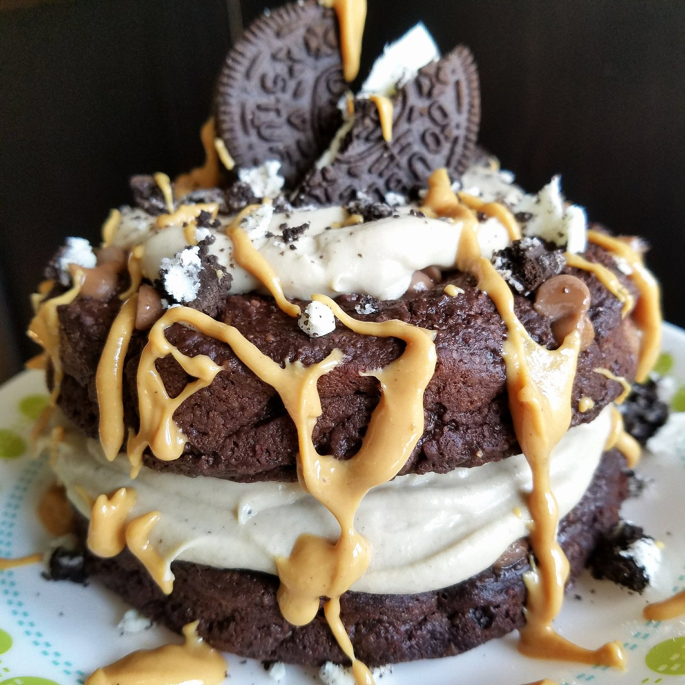
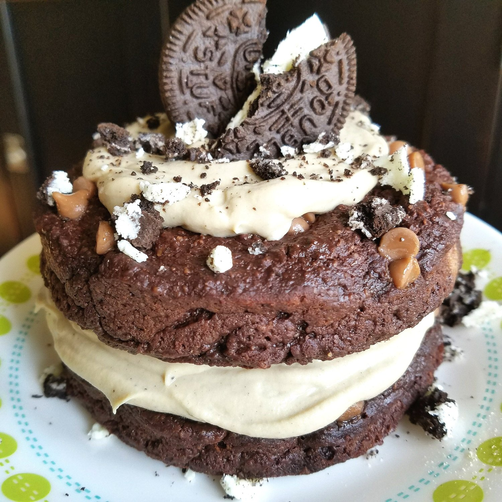
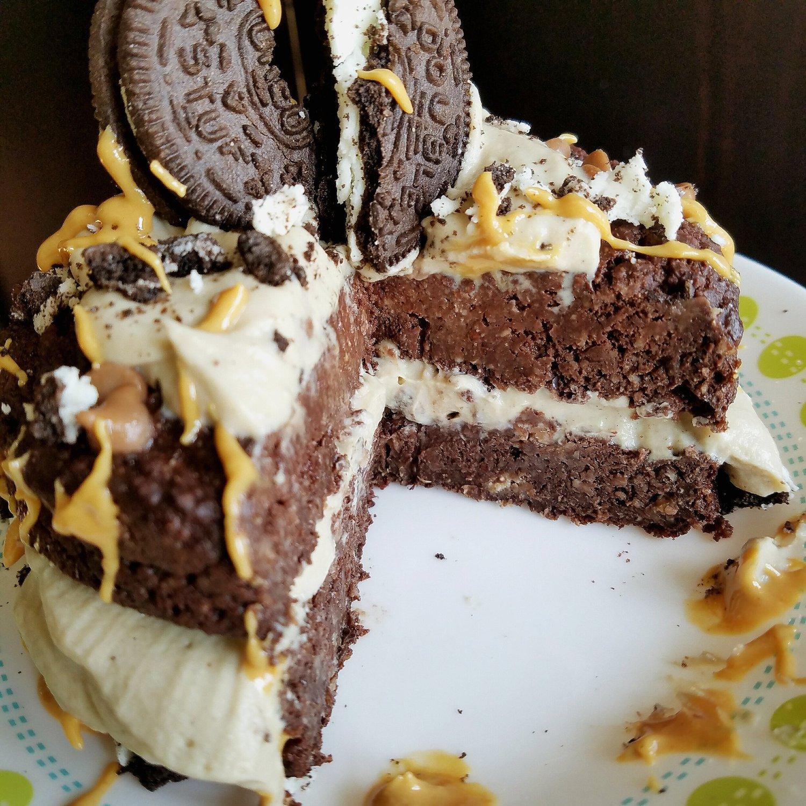

Caramel Oreo Protein Cake (vegan, gluten free)



Rich, healthy caramel oreo protein cake with drizzles of melted peanut butter. Don't be fooled by the seemingly unhealthy appeal of the pictures! This cake actually contains ZERO dairy, grains, butter, or added sugar. The recipe is entirely vegan and gluten free as well. Not only is it absolutely moist and delicious with hidden gems of caramel and an oreo cream, but the portions are perfect for a quick snack or a guilt-free dessert!
I know what you're probably thinking. "Really, Kim? Oreos, Caramel, AND peanut butter? Isn't that a little over the top." Just hear me out. I originally wanted an oreo chocolate cake. Then I started thinking..yeah but caramel would be great and I have these awesome vegan caramel chips I hardly use. So caramel oreo cake it is (which, by the way, the minimal caramel and the single oreo is the only sugar or oil in this recipe!). BUT THEN I baked the cake. It was all plated and ready to dig into. And I realized. IT'S NAKEY!!
I mean, look at it. Doesn't he just seem naked and afraid? No?...is it just me that thinks so? WELL. I felt that the cake needed a little extra oomph, so oomph is what it got with some Crazy Richard's peanut butter (aka the best pure peanut butter in existence...in the US at least). And now we're here!!Rich, cake with the sweetest oreo icing I have ever made. The icing deliciousness is all thanks to this True Nutrition protein I've been hoarding. Just take a minute to look at all the flavors!!! It's heaven. That's where I got this oreo flavor and its actually my favorite I've gotten.
Now, when I say that is oreo protein cake is "rich" I don't mean deep chocolate rich like the Chocolate Marshmallow Bars I posted recently. It's more like.. it's sweet and delightful and you will leave very satisfied from one slice. Don't get me wrong, it's still very tempting to eat the whole cake XD but one piece is definitely perfect.
Try this caramel oreo protein cake out and let me know what you think! Whether it's for dessert or just a quick snack, I think you'll love this delicious vegan, gluten free dessert. If you try it out, tag me on Instagram so I can see and have my heart melted!!
Caramel Oreo Protein Cake
Serves: 4
Batter
-
3/4 cup oat flour (ground oats)
-
1/2 scoop pea protein (15g – I used True Nutrition chocolate protein)
-
2 TBSP ground flax seeds
-
1/4 cup unsweetened cocoa powder
-
1/4 cup – 1/2 cup baking stevia
-
1/2 mashed ripe banana (1/4 cup)
-
3/4 cup unsweetened almond milk
-
1 tsp baking powder
-
2 TBSP vegan caramel chips
Icing
-
4 oz dairy free yogurt (1/2 cup)
-
3/4 scoop (22 g) Cookies & Cream Pea Protein (from true nutrition, or vanilla Nuzest protein is great)
-
1 oreo, crushed (use these gluten free "oreos" if you are gluten intolerant!!)
-
1 stevia packet
In a bowl, toss in all the batter ingredients! Mix until even. Pour the batter in a baking dish sprayed with nonstick spray – I used two mini springform pans but a small 4x9 would work perfect too. Bake at 350 F for 16-18 minutes. Remove, and let cool 10 minutes.
To prepare the icing, mix the yogurt (I prefer Silk brand), protein powder, stevia, and crushed oreo. Spread on top of the baked cake. Cut into 4 pieces. Eaaattttt!